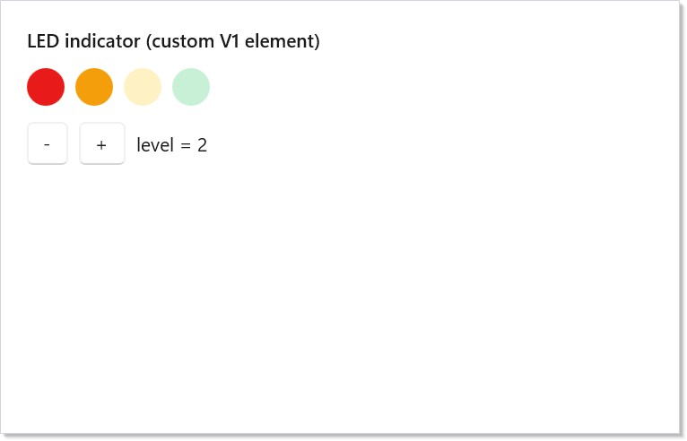

Microsoft.UI.Reactor (Reactor) draws the visible part of a frame by handing each immutable element record off to a per-control-type plug-in called a handler. The handler knows two things the reconciler doesn't: which WinUI control to instantiate, and which of that control's properties and events to wire to which element fields. The protocol is designed so authors do not pay for what they do not use — a handler that declares no children does no child dispatch, a controlled prop with no callback does not subscribe its event trampoline, a one-way prop whose value did not change does not write — and so every built-in control and every control you add yourself dispatches through the same tight loop. Read this page before adding a new native control or before reaching for a debugger when an existing one mis-updates.
The Control Reconciler Protocol¶
This page documents the data path between
Reconciler.Reconcile
and the WinUI control it edits. The audience is anyone extending
Reactor with a new native control, or anyone debugging why an
existing element does not update the way it should. The companion
Extending Reactor with Native Controls
walks through adding a control end-to-end; this page is the
reference under that recipe.
Dispatch — one handler per element type¶
The reconciler holds a dictionary keyed by System.Type of the
element record. When a re-render passes a new element to
Reconcile, the dictionary entry for that element's exact runtime
type is fetched, and that entry's Mount / Update / Unmount
methods run against the existing WinUI control. There is no base-class
fallback for ordinary handlers — registering ButtonElement does
not also catch a MyButtonElement that inherits from it; each
concrete element type has its own registration. (The one exception,
RegisterForDerivedTypes, exists for the
T-erased templated-list family and is called out explicitly below.)
public UIElement Mount(Element element, Action requestRerender, Reconciler reconciler)
{
var typedEl = (TElement)element;
var ctx = new MountContext(reconciler, requestRerender);
var control = _handler.Mount(ctx, typedEl);
// Anchor element identity on the control via the attached state DP so
// event trampolines can re-fetch the live element on each fire.
// Gated: callback-free leaves never dispatch into Reactor code, so we
// skip the ReactorState allocation for them (§4.4 follow-up).
if (control is FrameworkElement fe)
Reconciler.SetElementTagIfNeeded(fe, typedEl);
// Strategy dispatch — only when the handler declares a non-None Children strategy.
var strategy = _handler.Children;
if (strategy is not null)
DispatchChildrenMount(strategy, ctx, typedEl, control);
// Post-children mount hook. Fires after every child has mounted
// (whether via the strategy switch above or an items-binder strategy
// the handler dispatched inline before returning). Lets handlers
// subscribe events that must wire after children-add. Default no-op
// for handlers that don't override it.
_handler.AfterChildrenMount(ctx, typedEl, control);
return control;
}
The adapter shown above is the engine-side bridge between the typed
IElementHandler<TElement, TControl> shape and the type-erased entry
the registry stores. The hot path is dictionary lookup → interface call
→ a cast that the JIT folds at monomorphic call sites. The cost is
measured at one or two nanoseconds per element on warmed paths and is
the reason the protocol does not expose a switch-on-type dispatcher to
authors.
| Subsystem | File | What it owns |
|---|---|---|
| Handler contract | src/Reactor/Core/V1Protocol/IElementHandler.cs |
The Mount / Update / Unmount / Children surface |
| Contexts | src/Reactor/Core/V1Protocol/MountContext.cs |
Ref-struct mount/update/unmount contexts |
| Adapter | src/Reactor/Core/V1Protocol/V1HandlerAdapter.cs |
Type-erasure bridge into the registry |
| Children strategies | src/Reactor/Core/V1Protocol/ChildrenStrategy.cs |
Declarative child-dispatch shapes |
| Bindings | src/Reactor/Core/V1Protocol/ReactorBindingT.cs |
Event helpers + echo suppression |
| Descriptors | src/Reactor/Core/V1Protocol/Descriptor/ |
Declarative handlers + the interpreter |
| Pool | src/Reactor/Core/ElementPool.cs |
TryRent / Return for poolable controls |
The handler contract¶
public interface IElementHandler<TElement, TControl>
where TElement : Element
where TControl : UIElement
{
/// <summary>Create or rent the WinUI control, apply initial writes,
/// and subscribe event trampolines. Returns the control the engine
/// places into the parent's children collection.</summary>
TControl Mount(MountContext ctx, TElement element);
/// <summary>Diff <paramref name="oldEl"/> vs <paramref name="newEl"/>
/// and apply minimal writes to <paramref name="control"/>. Returns void:
/// the control identity is preserved (§13 Q12).</summary>
void Update(UpdateContext ctx, TElement oldEl, TElement newEl, TControl control);
/// <summary>Optional override for handlers with explicit teardown
/// (e.g. control-side IDisposable resources). Default no-op — the
/// engine still runs the pool reset contract.</summary>
void Unmount(UnmountContext ctx, TControl control) { }
/// <summary>Optional override for handlers that want to drive child
/// reconciliation manually instead of through
/// <see cref="Children"/>. Phase 1 strategy dispatch routes through
/// <see cref="Children"/>; this overload is retained for parity with
/// the spec §4 surface and Phase 3 use.</summary>
void ReconcileChildren(MountContext ctx, TElement oldEl, TElement newEl, TControl control) { }
/// <summary>Optional children strategy. Engine dispatches through it
/// when non-null (and not <see cref="None{TElement,TControl}"/>);
/// otherwise the handler is a leaf for the purposes of child
/// reconciliation.</summary>
ChildrenStrategy<TElement, TControl>? Children => null;
/// <summary>Issue #375 — children strategy the engine uses for the
/// unmount-side child walk. Defaults to <see cref="Children"/>; some
/// implementations (notably <see cref="Descriptor.DescriptorHandler{TElement,TControl}"/>)
/// suppress <see cref="Children"/> when they dispatch a strategy inline
/// during Mount/Update for ordering reasons (e.g. items-binder
/// strategies whose collection must be populated before
/// <c>SelectedIndex</c> initial writes land). On Unmount the ordering
/// constraint no longer applies, so they expose the real strategy here
/// so descendant Component <c>UseEffect</c> cleanups still fire.</summary>
ChildrenStrategy<TElement, TControl>? ChildrenForUnmount => Children;
/// <summary>Spec 047 §14 Phase 3 prelude (Engine A1) — optional hook the
/// engine invokes from <see cref="V1HandlerAdapter{TElement,TControl}"/>
/// after the <see cref="Children"/> strategy has mounted/bound every child
/// (and after any items-binder strategy the handler dispatched inline).
/// Default no-op.
///
/// <para>Override this to wire events whose subscription must happen
/// strictly after children-add — e.g. <c>TabView.SelectionChanged</c>,
/// which WinUI fires spuriously while the first tab is being added if the
/// handler subscribes during the prop-apply phase. Subscribing here side-
/// steps that first-add echo.</para></summary>
void AfterChildrenMount(MountContext ctx, TElement element, TControl control) { }
}
Mount runs the first time the reconciler sees an element of this
type at a given slot. It rents a control from the pool (or allocates
one), applies initial property writes, subscribes the events it cares
about, and returns the control the reconciler will install in the
parent's child collection. Update runs every subsequent render where
the same slot still holds an element of the same type — it diffs the
old element against the new and applies the minimum writes needed.
Unmount runs when the slot disappears or its element type changes;
the default body is a no-op because the engine handles pool return
and child teardown for the standard case. The optional Children
property declares how child elements are dispatched — see
Children strategies below.
The contract has two deliberate constraints worth pointing out. First,
Update returns void — handlers do not swap control instances
across renders. If a re-render genuinely needs a different control
type (a Button becoming a HyperlinkButton, for example), it is
encoded as a different Element subclass, and the reconciler's
type-change path unmounts the old and mounts the new at that slot.
Second, Mount and Update run on the dispatcher thread that owns
the reconciler — handler bodies are free to touch control state
without synchronization, and code that crosses threads is the
author's responsibility (and a debug-build assert).
Caveat:
Mountis called exactly once per realized control, but the same control may be passed back to a different handler instance through the pool. If you stash per-control state in a field on the handler instance, it survives pool rent — and that is almost certainly a bug. Per-control state lives on the control, either as an attached state DP or as the typed event payload box (Reconciler.GetOrCreateControlEventPayload), both of which the pool reset contract clears. The handler instance is a stateless interpreter.
Contexts and bindings¶
The reconciler passes three contexts into a handler, one per lifecycle
phase. Each is a readonly ref struct, so the context cannot escape
the call stack, cannot be captured by a closure, and does not allocate.
public readonly ref struct MountContext
{
private readonly Reconciler _reconciler;
private readonly Action _requestRerender;
internal MountContext(Reconciler reconciler, Action requestRerender)
{
_reconciler = reconciler;
_requestRerender = requestRerender;
}
/// <summary>The rerender callback for the owning component subtree.</summary>
public Action RequestRerender => _requestRerender;
/// <summary>The owning reconciler. Provided as an escape hatch for handlers
/// that need to forward a child mount through some non-strategy path.</summary>
public Reconciler Reconciler => _reconciler;
/// <summary>Mount a child element through the reconciler. The returned
/// <see cref="UIElement"/> is whatever the reconciler decided to mount
/// (possibly null for <c>EmptyElement</c>).</summary>
public UIElement? MountChild(Element child) => _reconciler.Mount(child, _requestRerender);
/// <summary>Reconcile a secondary element slot (mount / update-in-place / unmount)
/// against an already-mounted control, preserving descendant component state across
/// re-renders. <paramref name="existing"/> is the control currently in the slot (or
/// <c>null</c>). Returns the control to assign back into the slot. Public counterpart
/// to the engine-internal child reconcile, so external wrappers (not just built-in
/// descriptors) can host stateful secondary element slots — see
/// <c>[WrapElementSlot]</c>.</summary>
public UIElement? ReconcileChild(Element? oldChild, Element? newChild, UIElement? existing)
=> _reconciler.ReconcileV1Child(oldChild, newChild, existing, _requestRerender);
/// <summary>The <see cref="Reconciler.ApplySetters{T}(Action{T}[], T)"/> helper; provided
/// on the context for symmetry with handler-authored mount bodies.</summary>
public void ApplySetters<T>(Action<T>[] setters, T control) where T : class
=> Reconciler.ApplySetters(setters, control);
/// <summary>Construct a per-binding event helper for the given control + element.
/// The returned binding closes over the control identity, not the element
/// — handlers re-fetch the live element via <c>ReactorState.Element</c> on
/// each event fire, so the same binding survives element re-renders.</summary>
public ReactorBinding<TElement> BindFor<TElement>(FrameworkElement control, TElement element)
where TElement : Element
=> new ReactorBinding<TElement>(_reconciler, control, element);
/// <summary>Rent a control instance from the per-type pool, or allocate
/// a fresh one if the pool is empty / the policy opts out.</summary>
public T RentControl<T>(PoolPolicy<T>? policy = null, Func<T>? factory = null) where T : class, new()
=> _reconciler.RentControl(policy, factory);
/// <summary>Push a typed context value for the duration of the returned
/// <see cref="IDisposable"/>. Used by handlers that mount children which
/// must see an author-supplied context.</summary>
public IDisposable PushContext<T>(Context<T> context, T value) => _reconciler.PushContextDisposable(context, value);
/// <summary>Push a stagger scope; children mounted inside the scope
/// consume stagger indices for their enter transitions.</summary>
public IDisposable PushStaggerScope(TimeSpan delay) => _reconciler.PushStaggerScopeDisposable(delay);
/// <summary>Escape hatch (Q11) — attach a raw routed handler directly to
/// the control. Handlers should prefer the typed <c>On*</c> family on
/// <see cref="ReactorBinding{TElement}"/>; use this only for events the
/// binding doesn't cover (e.g. <c>UIElement.PreviewKeyDown</c> on a
/// non-FrameworkElement, or app-side custom routed events).</summary>
public void AddRawRoutedHandler(UIElement target, RoutedEvent re, Delegate h, bool handledEventsToo)
=> target.AddHandler(re, h, handledEventsToo);
}
MountContext.RentControl<T>() is how a handler obtains its WinUI
control. By default the engine pools every type that opts in via
PoolableTypes — Button, TextBlock, Border, every common leaf —
and RentControl returns a reset instance from the per-type stack
when one is available. Authors can override the pool policy or supply
a custom Func<T> factory for controls that need constructor
arguments or that should never pool. RentControl is therefore the
single place a handler crosses into native land, and the engine
ensures that every rented control reaches ReturnControl on unmount.
MountContext.BindFor(control, element) produces a
ReactorBinding<TElement>
that wires events from the WinUI side back to element callbacks. The
binding has typed On… methods for the WinUI routed-event families
(pointer, key, tap, focus) and a general OnCustomEvent<TArgs> for
plain CLR events (Click, ValueChanged, TextChanged). The
critical property of every On… method is that the event trampoline
captures the control, not the element — at fire time it re-reads
the live element from
Reconciler.GetElementTag(control).
The same subscription therefore survives every re-render without
re-subscribing.
UpdateContext is the same surface as MountContext minus
RentControl — update bodies run against an existing control, and
allocating a new one is forbidden on this path. UnmountContext is
narrower still: it carries only ReturnControl<T> for the optional
pool-return contract.
The mount-then-subscribe invariant¶
A controlled property — a property whose value the framework writes and whose value the user can edit on the WinUI side — would race if the handler subscribed to the change event before writing the initial value. The descriptor interpreter (and every hand-coded handler that follows the same shape) sequences the work in two passes so the race cannot happen:
public TControl Mount(MountContext ctx, TElement el)
{
var ctrl = ctx.RentControl(_descriptor.PoolPolicy, _descriptor.Factory);
// A descriptor that declares teardown must actually receive it. The engine's unmount
// dispatch is tag-gated (Reconciler.UnmountRecursive only reaches the V1 handler when
// GetElementTag returns an element), and SetElementTagIfNeeded allocates ReactorState
// only for elements that carry callbacks, a key, extensions, or reference modifiers.
// Without this, OnUnmount would fire for some elements of a type and silently not for
// others — the callback-free ones — which is not a contract an author can reason about.
if (_descriptor.OnUnmount is not null)
Reconciler.GetOrCreateReactorState(ctrl);
// §14 Phase 3-final: when the descriptor declares an ItemsHost,
// populate the items collection BEFORE the prop loop. Initial writes
// for selection-tracking props (SelectedIndex/SelectedItem) need the
// collection populated first — WinUI silently clamps selection
// against an empty collection.
if (_descriptor.Children is ItemsHost<TElement, TControl> ih)
DispatchItemsHostMount(in ctx, el, ctrl, ih);
// §14 Phase 3 finish — consolidated dispatch arm: every items-
// binder variant uses the same "bind before prop loop" ordering so
// SelectedIndex initial writes land against a populated list.
else if (_descriptor.Children is IItemsBinderStrategy binder && ctrl is FrameworkElement feBinder)
binder.Bind(feBinder, oldElement: null, el, ctx.Reconciler, ctx.RequestRerender, isMount: true);
// Phase 1: all bare initial writes (no echo possible — subscriptions
// not yet live). §14 Phase 3-final: dispatch through the
// context-carrying overload so OneWayBridged entries can reach the
// reconciler/rerender helpers; existing entries forward to the
// parameterless overload via the virtual default on PropEntry.
var props = _descriptor.Properties;
for (int i = 0; i < props.Count; i++)
props[i].Mount(in ctx, ctrl, el);
// Phase 2: subscribe controlled entries.
var binding = ctx.BindFor(ctrl, el);
for (int i = 0; i < props.Count; i++)
props[i].EnsureSubscribed(binding, ctrl, el);
var getSetters = _descriptor.GetSetters;
if (getSetters is not null)
ctx.ApplySetters(getSetters(el), ctrl);
return ctrl;
}
The first loop runs the bare initial writes for every entry. The
second loop wires the trampolines. Because no trampoline is listening
during the first loop, the synchronous change events WinUI raises when
the framework writes IsOn = true, Value = 3.5, or Text = "hi"
go nowhere — and the user's callback receives no spurious initial
fire on Mount. On Update the equivalent property writes go through
ReactorBinding.WriteSuppressed, which marks a per-control suppress
counter that the trampoline drains before invoking the callback. The
net effect is that the callback fires exactly when the user
interacted with the control, never when the framework wrote a value
the user did not type.
The same invariant covers pool rent: a control returned to the pool
keeps its typed event-payload box, and re-mount checks the box's
Trampoline slot to skip re-subscription. A pooled RatingControl
that gets rented out for a fresh StarMeterElement does not
double-subscribe its ValueChanged event.
Optional-aware Update gate¶
Controlled descriptor entries read Optional<TValue> from the new
element before they compare or arm echo suppression:
var nvOpt = _get(newEl);
if (!nvOpt.HasValue) return;
var nv = nvOpt.Value;
var current = _readBack(ctrl);
// Spec 047 §8 echo-suppression contract: write ONLY when the control has
// drifted from the element's authority. A no-drift write raises no event,
// so arming would strand the pending flag (the §8 cross-state echo class).
if (_comparer.Equals(current, nv))
return;
Unset is therefore a real authority state, not a sentinel value of
TValue: Mount skips the initial write, Update returns before any
readBack, comparer call, echo arm, or set. When HasValue is true,
the entry uses the same value-diff arm as other exact-comparable
controlled props — it records the expected value, writes, and the
trampoline suppresses only the matching programmatic echo. The
current == value short-circuit stays in front of the arm so an
already-correct control does not strand a pending echo token.
Children strategies¶
A handler's Children property declares how its child elements
get dispatched. The strategy is a sealed record subclass; the
adapter's switch over the strategy types runs after Mount / Update
return, so the handler body itself never has to walk children.
public abstract record ChildrenStrategy<TElement, TControl>
where TElement : Element
where TControl : UIElement;
/// <summary>Leaf — no children. Engine performs no dispatch beyond the
/// handler's Mount/Update body.</summary>
public sealed record None<TElement, TControl>() : ChildrenStrategy<TElement, TControl>
where TElement : Element
where TControl : UIElement;
/// <summary>Single-content host (Border, ContentControl, Viewbox). The
/// engine mounts <paramref name="GetChild"/>'s result and assigns it via
/// <paramref name="SetChild"/>.
///
/// <para><b>Structural reconcile:</b> set <see cref="GetCurrentChild"/> so
/// the engine can read the existing slot value during <c>Update</c> and
/// route through <c>Reconciler.ReconcileV1Child</c> — that preserves
/// descendant component state across parent re-renders. When left null,
/// the engine remounts the child on every update (only safe for slots that
/// are reset every render anyway). All built-in handlers set it.</para></summary>
public sealed record SingleContent<TElement, TControl>(
Func<TElement, Element?> GetChild,
Action<TControl, UIElement?> SetChild) : ChildrenStrategy<TElement, TControl>
where TElement : Element
where TControl : UIElement
{
/// <summary>Optional: read the current child from the control. Required
/// for structural child reconciliation; if null the engine falls back to
/// remounting the child every Update.</summary>
public Func<TControl, UIElement?>? GetCurrentChild { get; init; }
}
/// <summary>Panel host (StackPanel, Grid, Canvas). Engine mounts each
/// child and appends to the panel's <see cref="UIElementCollection"/>.
///
/// <para><b>Phase 1 limitation:</b> the dispatch is append-only; structural
/// diff against the previous render goes through the host's child
/// collection wholesale. Spec-042 keyed-reconcile integration is a
/// Phase 3 follow-up.</para>
///
/// <para><b>§14 Phase 3-final addition:</b>
/// <see cref="PerChildAttached"/> — optional callback invoked after each
/// child mount AND after each child Update. Receives the mounted
/// <see cref="UIElement"/> alongside the child element so the descriptor
/// can write WinUI attached DPs (e.g. <c>Grid.SetRow</c>,
/// <c>Canvas.SetLeft</c>) based on attached-prop hints carried on the
/// child element. No-op by default.</para>
///
/// <para><b>§14 Phase 3 close-out addition:</b>
/// <see cref="PerChildAttachedAfterAll"/> — optional two-pass callback
/// invoked once after every child has been mounted (Mount path) or
/// reconciled (Update path). Receives the full <c>(UIElement, Element)</c>
/// pair list in collection order so the descriptor can apply attached
/// DPs that reference OTHER children by name (e.g.
/// <c>RelativePanel.SetRightOf(b, a)</c>). Distinct from
/// <see cref="PerChildAttached"/>, which fires per-child mid-pass and
/// cannot see siblings that haven't mounted yet. Most descriptors set
/// only one of the two; <c>RelativePanel</c> is the canonical consumer
/// of the after-all shape.</para>
/// </summary>
public sealed record Panel<TElement, TControl>(
Func<TElement, IReadOnlyList<Element>> GetChildren,
Func<TControl, UIElementCollection> GetCollection) : ChildrenStrategy<TElement, TControl>
where TElement : Element
where TControl : UIElement
{
/// <summary>Optional per-child attached-prop writer. Called by the
/// engine after each child is mounted (Mount path) AND after each child
/// is reconciled (Update path). The descriptor reads attached-prop
/// hints off the child element (via <c>Element.GetAttached<T>()</c>
/// or similar) and writes the corresponding WinUI attached DPs onto
/// the mounted <see cref="UIElement"/>. Defaults to <c>null</c> for
/// containers that don't carry per-child attached props
/// (e.g. <c>StackPanel</c>).</summary>
public Action<TControl, UIElement, Element>? PerChildAttached { get; init; }
/// <summary>Optional two-pass callback fired once after every child has
/// been mounted/reconciled, receiving the full ordered list of
/// <c>(UIElement, Element)</c> pairs. Use for attached DPs that
/// reference siblings by name — e.g. <c>RelativePanel.SetRightOf</c>.
/// Defaults to <c>null</c>; only RelativePanel-shaped descriptors set
/// it.</summary>
public Action<TControl, IReadOnlyList<(UIElement Mounted, Element ChildElement)>>? PerChildAttachedAfterAll { get; init; }
}
| Strategy | Shape | Used by |
|---|---|---|
None |
Leaf — no children | Button, TextBlock, Slider, RatingControl, every leaf |
SingleContent |
One child slot, GetCurrentChild for structural reconcile |
Border, ContentControl, Viewbox, Expander body |
Panel |
Ordered child list against UIElementCollection, optional PerChildAttached for attached DPs |
Grid, StackPanel, Canvas, RelativePanel |
NamedSlots |
Multiple named slots, each binding via a NamedSlot record |
SplitView (Pane + Content), NavigationView (Header + Content + PaneFooter) |
ItemsHost |
Flat items collection — IReadOnlyList<object> projected into the control's Items sink |
ListBox, ComboBox, RadioButtons, simple FlipView |
TemplatedItems<TItem,…> |
Keyed templated list — routes through BindKeyedItemsSource for spec-042 keyed reconcile |
ListView<T>, GridView<T> |
TemplatedItemsErased |
Same shape, T erased via IKeyedItemSource for typed-list base types |
TemplatedListViewElement<T> family |
TreeChildren |
Hierarchical TreeViewNode tree, optional per-node ContentElement |
TreeView |
TabItemsHost |
Heterogeneous items (TabViewItem / PivotItem) with in-place positional reconcile |
TabView, Pivot |
PreMountedItems |
Pre-mounted items against a flat sink with no ContainerContentChanging |
Templated FlipView |
Imperative |
Escape hatch — handler reconciles children itself | Custom containers that span multiple WinUI properties |
The strategy switch is the engine's seam between the handler protocol
and the rest of the reconciler — SingleContent and NamedSlots
route through
Reconciler.ReconcileV1Child,
which is the same diff path the rest of Reactor uses; Panel
walks the new and old child lists in lockstep and preserves descendant
component state across reorderings that do not change identity;
TemplatedItems and TemplatedItemsErased route through
Reconciler.BindKeyedItemsSource, which owns the spec-042
KeyedListDiff realization plumbing — and so on. Adding a new
strategy is a Reactor-internals task; adding a new handler that
consumes one of these strategies is what extension authors do.
Pool integration¶
The descriptor's PoolPolicy (and the corresponding parameter to
MountContext.RentControl<T>) determines whether the control type
pools at all and, if so, how to reset its mutable state when it goes
back into the pool. Most leaf controls — Button, TextBlock,
Border, RatingControl, every input the form catalog covers —
opt in by default; the per-type entry in PoolableTypes declares the
reset hook (clearing handlers, clearing local property values) so
a rented instance is observably indistinguishable from a fresh one.
Authors writing a new handler should generally accept the default and
let the engine pool the control; the policy escape hatch exists for
controls whose state is too large or whose teardown is too expensive
to be worth pooling.
MountContext.RentControl<T> is the single rent path. The engine
guarantees that every rent reaches a ReturnControl on unmount — the
default adapter body calls Unmount with a V1UnmountDisposition
result that opts into pool collection, the engine then walks the
unmounted subtree and returns each control to its per-type stack. An
author writing Unmount does not have to call ReturnControl
themselves unless they rented from the engine via the manual
RentControl overload — the default lifecycle is fully managed.
Echo suppression and WriteSuppressed¶
When the framework writes the controlled prop, the WinUI control raises its change event synchronously. The event trampoline cannot distinguish "the user typed this" from "the framework just wrote this" without help, and forwarding the framework's own write to the element callback would round-trip the same value through the user's state setter and trigger a spurious re-render.
Reactor drops that echo with two mechanisms — the documented hybrid
described on Threading and Dispatch.
Single-valued, exact-comparable, synchronous round-trips use a
value-diff arm: the entry records the value it is about to write in
ReactorState.PendingEchoMatch, writes bare, and the trampoline drops
the one event whose readback matches. Everything else — doubles,
coercing or deferred values, collection batches, .Set(...) scopes, and
the public WriteSuppressed primitive — uses the suppress counter:
| Method | When to call | Effect |
|---|---|---|
binding.WriteSuppressed(mutate) |
Inside Update when writing a controlled prop |
Increments the suppress counter, runs the mutate, decrements |
ReactorBinding.ShouldSuppressEcho(fe) |
Inside an event trampoline | Drains a pending suppress count and returns true; trampoline short-circuits |
The counter arm wins first when both are live on the same control, and a value-diff arm still set at that moment is cleared rather than left to strand and swallow the user's next real interaction.
The trampolines that ReactorBinding.OnCustomEvent<TArgs> generates drain
the suppress counter on entry — every controlled prop in every built-in
handler is echo-safe without the handler author having to think
about it. Hand-authored trampolines (the ones that bypass
OnCustomEvent for performance) follow the same shape; see
Reconciler.GetOrCreateControlEventPayload for the per-control
payload box that anchors the trampoline for the control's lifetime.
Element identity via the tag¶
Every framework element record is anchored on its mounted
FrameworkElement via Reconciler.SetElementTag(fe, element), an
attached state DP (ReactorAttached.StateProperty, carrying a
ReactorState). The tag is what makes event trampolines safe across
re-renders: the trampoline closes over the control instance, calls
Reconciler.GetElementTag(control) at fire time, casts the result to
the typed element, and invokes the callback. The element value is
refreshed on every Update, so the
trampoline always sees the live element — including the live
callback, the live state captured by the user's component, and any
intervening prop changes.
Handler authors get the tag wiring for free — the adapter writes it
after Mount returns and after every Update. The write is
allocation-gated by SetElementTagIfNeeded: an element with no
callbacks, no Key, no Extensions, and no reference modifiers is
never tagged, because nothing downstream would read it back.
Hand-authored trampolines
that need to read the tag (e.g. ButtonElement's static
__ClickTrampoline) call GetElementTag and pattern-match
on the expected element type.
Descriptors — declarative handlers¶
IElementHandler is the imperative shape; ControlDescriptor is the
declarative one. A descriptor is a list of PropEntry objects (each
encoding one property's binding shape) plus an optional children
strategy, optional factory, and optional pool policy. The
DescriptorHandler<TElement, TControl> interpreter is itself an
IElementHandler, so the registry sees no difference between a
hand-coded handler and a descriptor — the dispatch shell is identical,
and any cost difference is the interpreter's iteration over a small
list of entries.
// A descriptor declares property bindings against the WinUI control the
// element targets. The framework's DescriptorHandler interprets the entries
// during Mount and Update — there is no per-element interpreter overhead
// beyond a dictionary lookup and the entry-loop iteration.
public static class LedIndicatorDescriptor
{
public static readonly ControlDescriptor<LedIndicatorElement, WinUI.Border> Descriptor =
new ControlDescriptor<LedIndicatorElement, WinUI.Border>
{
// The descriptor's children strategy says "no children" — this is
// a leaf control. See ChildrenStrategy survey in the prose.
Children = new None<LedIndicatorElement, WinUI.Border>(),
}
// OneWay: write on Mount, diff-and-write on Update. Equality skips
// the write when the element value didn't change.
.OneWay(
get: static e => e.Size,
set: static (c, v) => { c.Width = v; c.Height = v; c.CornerRadius = new Microsoft.UI.Xaml.CornerRadius(v / 2); })
// The IsOn → Background mapping coerces both inputs onto one WinUI
// property. A single OneWay entry observes (Color, IsOn) jointly
// by reading both off the element in the get/set lambdas.
.OneWay(
get: static e => (e.Color, e.IsOn),
set: static (c, v) =>
c.Background = new SolidColorBrush(
v.IsOn ? v.Color : Color.FromArgb(0x40, v.Color.R, v.Color.G, v.Color.B)));
internal sealed class Handler : DescriptorHandler<LedIndicatorElement, WinUI.Border>
{
public Handler() : base(LedIndicatorDescriptor.Descriptor) { }
}
}
The descriptor above declares a single one-way mapping from
(Color, IsOn) onto Border.Background, plus a size hook that
writes Width, Height, and CornerRadius in one entry. It is a
complete extension: every LedIndicatorElement the app renders
flows through this descriptor, including pool rent, prop diff, and
unmount.

PropEntry shapes — the prop-binding vocabulary¶
The fluent builder methods on ControlDescriptor add one entry per
call. The full vocabulary covers the common cases plus the escape
hatches a hand-coded handler would otherwise need:
| Builder | When to reach for it |
|---|---|
.OneWay(get, set) |
Plain one-way prop; write on Mount, diff-write on Update. No event subscription. |
.OneWay(get, set, dp:) |
Optional<T> one-way prop backed by a DP; HasValue writes and Unset calls ClearValue(dp). |
.OneWayConditional(get, set, shouldWrite) |
Explicit skip-write prop where the predicate is more complex than set-vs-unset. |
.InitialOnly(get, set) |
Write once at Mount and never again. Use for seed-only props (TextBox.InitialText, etc.). |
.Controlled<TValue, TArgs>(get, set, subscribe, unsubscribe, callback, readBack) |
Two-way prop whose get returns Optional<TValue>. Unset means control-owned; HasValue writes with echo suppression and user input rounds back via the change event. Subscription is gated on callback returning non-null. |
.CoercingOneWay(get, set, coercesController) |
One-way prop whose write may coerce a sibling controlled value (e.g. Slider.Minimum re-clamping Slider.Value); writes through WriteSuppressed when the coercion fires. |
.HandCodedControlled<TPayload, TValue, TDelegate> |
Two-way prop with a multi-event control where the standard Controlled shape would collide on the per-control event payload (TextBox.Text alongside SelectionChanged). |
.HandCodedEvent<TPayload, TDelegate> |
Fire-and-forget event with no associated DP (Button.Click, Image.ImageOpened). |
.CollectionDiffControlled<…> |
Two-way prop whose value is an IReadOnlyList<TItem> round-tripped against a control-side IList<TItem> (CalendarView.SelectedDates). |
.Reference<TTarget>(get, set) |
One-way reference prop whose value comes from an ElementRef<TTarget> cell; rewrites on target mount/unmount and clears when unresolved. |
.ReferenceList<TTarget>(get, apply) |
One-way list of reference props; resolves currently-mounted cells in declaration order and rebuilds the control list. |
.OneWayBridged(get, set, shouldWrite) |
One-way prop whose set lambda needs access to the reconciler (used by the button-family flyout port). |
.Imperative(mount, update) |
Property-level escape hatch — the lambdas receive (control, element) and (control, oldEl, newEl) so an entry can express a diff the standard builders cannot. |
.ImperativeBridged(mount, update) |
Same shape with the MountContext / UpdateContext available — primary use is a secondary Element slot that needs structural reconcile via ReconcileV1Child. |
The entries iterate as a flat list, in declaration order. The
descriptor's children strategy runs first when it is an items binder
(so selection-tracking props see the populated collection at Mount);
otherwise the strategy fires after the entry loop. The mount-then-
subscribe ordering invariant is preserved by running every entry's
Mount body before any entry's EnsureSubscribed.
ReferencePropEntry and ReferenceListPropEntry are deliberately
one-way. The element owns the cell or cell list; the native control
receives the resolved target(s). EnsureSubscribed stores a reference
edge on the control's ReactorState.ReferenceEdges bag, diffs the
currently declared cells against existing subscriptions, and applies
once immediately. When a target cell's CurrentChanged fires during a
commit, the edge is added to ReferenceDirtySet; the reconciler flushes
that dirty set after the tree commit so relationship writes see a
stable mounted tree. Unmounting a referenced target calls
SetCurrent(null), so referrers clear automatically. Unmounting or
pool-returning the referrer tears down scalar and list edges from the
bag, unsubscribing every cell.
Registration¶
Handlers are registered with a Reactor host's reconciler before the
first render. There are two paths — a global ControlRegistry
(the standard path for shipping a new control) and a per-host
Reconciler.RegisterHandler (the explicit-override escape hatch used
by tests and host substitution). The reconciler's lookup tries both
on every Mount; precedence is documented in
Dispatch precedence below.
ControlRegistry (standard path)¶
ControlRegistry.Register<TElement, TControl>(Func<IElementHandler<TElement,TControl>>)
is the surface custom-control authors target. The recommended shape
is the factory holder described in
Extending Reactor — Step 6:
a static class whose static constructor calls
ControlRegistry.Register with a static () => new MyHandler()
lambda, paired with an Of(...) factory that is the sole
construction path for the element record. The CLR-guaranteed precise-
initialization rules mean the registration is in place before any
Of(...) call can return, with no app-bootstrap step required.
| Method | Use when |
|---|---|
ControlRegistry.Register<TElement, TControl>(static () => new MyHandler()) |
Standard global registration — exact-type dispatch on element.GetType(). The static lambda is mandatory: it caches the delegate in a static field (one allocation, ever) and is what lets the trimmer drop the holder→handler→control chain when unreachable. |
ControlRegistry.RegisterDecorator<TElement>(static () => new MyDecorator()) |
Decorator handlers (IDecoratorElementHandler<TElement>), e.g. for control wrappers that don't follow the standard Mount(control) shape. |
ControlRegistry.RegisterForDerivedTypes<TBase, TControl>(static () => new MyHandler()) |
T-erased registration on a non-generic base type — every closed-T variant whose chain reaches TBase routes to the same handler. Used by the typed templated-list family (TemplatedListViewElement<T>, etc.). |
ControlRegistry.RegisterDecoratorForDerivedTypes<TBase>(...) |
Same as above for decorator handlers. |
The built-in controls themselves register through ControlRegistry
via per-factory Reg<>.Done / RegDecorator<>.Done touches in
src/Reactor/Elements/Dsl.cs (the closed-generic-cctor latch shape
described in
Extending Reactor — Step 3).
A few cases use other shapes: the XAML interop bridges register from
element-record static constructors in src/Reactor/Hosting/XamlInterop.cs,
the Icon decorator family uses a private nested registration latch
inside the Icon(...) factories (singleton handler can't satisfy the
new() constraint), and the typed templated-list/items-repeater/items-view
families use base-derived registration latches nested under their
descriptor types. The
Hello-World AOT trim proof
is the authoritative test that this story holds end-to-end: an app
whose Render() references only TextBlock and Button publishes
without any of the other built-in handler classes or element records.
Reconciler.RegisterHandler (explicit override / escape hatch)¶
Reconciler.RegisterHandler<TElement, TControl>(handler) registers a
handler on a single Reconciler instance. It exists for two
scenarios — both narrow:
- Tests. A test harness substituting a fake control for a built-in
one (e.g., replacing
Button's handler with a record-only stub that tracks click counts without rendering a real WinUI button) builds a freshReconciler, callsRegisterHandlerto install the fake, and dispatches against it. The per-host registration shadows the global one for the lifetime of thatReconciler. - Host substitution. Authoring a non-WinUI Reactor host
(a test surface, a hosted-runtime sandbox) where the global
ControlRegistry's handlers reference WinUI types that should not be loaded. Register host-specific handlers per-instance to bypass the global registry entirely.
Custom-control authors should reach for the
ControlRegistry path instead. A
manual per-host RegisterHandler call at app bootstrap roots every
custom control unconditionally and defeats the trim story — see
Extending Reactor — playbook caveat
for why the factory-holder shape is the recommended one.
Duplicate registration for the same element type on the same reconciler throws — there is no last-writer-wins. Exact-type registrations always win over a derived-type registration for the same chain.
Caveat: Duplicate-registration semantics differ between the two paths. The global
ControlRegistryusesTryAddand is first-wins idempotent — a duplicateControlRegistry.Register<TElement, …>call silently no-ops, because surfacing a throw from a factory holder's class-init would manifest as a non-deterministicTypeInitializationExceptionat first-use, dependent on which cctor the JIT/AOT runtime ran first. The strict throw-on-duplicate policy (originally from spec 047 §13 Q17) is preserved on the explicit per-hostReconciler.RegisterHandlerpath, where the caller is in control of registration order and a duplicate is unambiguously a mistake. Within a single host, the precedence list above means a per-hostRegisterHandlerregistration shadows a globalControlRegistryregistration for the same element type — that asymmetry is by design (test substitution requires shadowing, not throwing). Seesrc/Reactor/Core/V1Protocol/ControlRegistry.csfor the canonical comment on the trade-off.
Dispatch precedence¶
When the reconciler looks up the handler for an element type, it consults four sources in order; the first hit wins:
- Per-host exact-type registrations — entries installed via
Reconciler.RegisterHandler<TElement, TControl>(handler)on this reconciler instance. These shadow the global registry for this host (the test-substitution shape above). - Per-host derived-type registrations — entries installed via
Reconciler.RegisterHandlerForDerivedTypes<TBase, TControl>(handler)on this reconciler. Caught when the element's chain reachesTBaseand no exact-type entry matched in step 1. - Global
ControlRegistryregistrations — entries installed viaControlRegistry.Register/RegisterDecorator/RegisterForDerivedTypes/RegisterDecoratorForDerivedTypes, typically through a factory-holder's static constructor. This is the path every shipping control (built-in or custom) takes. - Composition primitives — the structural element records still
served by the reconciler's hand-coded switch arm after every
registry lookup misses. These are the component/host wrappers
(
ComponentElement,FuncElement,MemoElement,ErrorBoundaryElement), the validation helpers (FormFieldElement,ValidationVisualizerElement,ValidationRuleElement), the typed templated-tree host (TemplatedTreeViewElementBase), and the command-host wrapper. They are not user-registrable. (Panels likeVStack/HStack/Gridno longer land here — they register their handlers through source 3 like every other shipping control.)
The Pattern A factory-holder shape (Step 3 of the
Extending Reactor playbook)
lands in source 3 — global ControlRegistry. The per-host
RegisterHandler calls in test code land in source 1 and shadow
whatever the production registration installed.
Patterns¶
A handful of recurring patterns cover the long tail of real handlers:
Map two element fields onto one control property. Use a single
.OneWay entry whose get returns a tuple and whose set reads
both fields. The descriptor's value comparer treats the tuple
atomically, so the write fires only when either field changes. This
is how the LED demo collapses (Color, IsOn) into a single
Background update.
Map one element field onto multiple control properties. Same
shape: one .OneWay entry whose set body writes all of them. The
diff-check still runs only against the element's source field.
Gate subscription on callback presence. Pass e => e.OnXxx as
the callback parameter to .Controlled or .HandCodedEvent. When
the element returns null the engine skips subscription entirely —
callback-less controls pay zero per-fire dispatch cost. This is the
standard idiom; do not gate manually inside a hand-authored
trampoline.
Survive across re-renders. Hand-authored trampolines that bypass
OnCustomEvent must read the live element via
Reconciler.GetElementTag(control) rather than capturing the element
in the closure — the closure-captured element goes stale every render
and the callback observes the wrong state. Every built-in
HandCodedEvent trampoline follows this shape; copy it.
Common Mistakes¶
Subscribing inside Update. Each Update call runs against an
existing control whose subscriptions are already wired from Mount.
Subscribing again in Update multiplies the trampolines across
re-renders. The protocol's contract is: subscribe in Mount (or, for
descriptors, in EnsureSubscribed which the interpreter calls after
the Mount entry loop and lazily on null → non-null callback
transitions).
Writing without WriteSuppressed from Update. A controlled
prop write from Update raises the change event synchronously and
echoes through the trampoline back into the user's setter. Every
controlled-shape descriptor entry already wraps the write; hand-coded
handlers should mirror this. Forgetting it is the most common cause
of "the value snaps back when I type" bugs.
Capturing the element in a trampoline closure. Closures over the
element observe a stale value on the next render. Re-fetch via
Reconciler.GetElementTag(control) on every fire instead.
Stashing state on the handler instance. Handler instances are registered once per host and live as long as the reconciler. Per- control state needs to live on the control (attached state DP, typed event payload box), not on the handler. The handler is a stateless interpreter.
Registering a handler against an open generic. The dispatch table
keys on System.Type, so an open generic like typeof(DataGrid<>)
has no usable runtime type. Use ControlRegistry.RegisterForDerivedTypes
(or the per-host Reconciler.RegisterHandlerForDerivedTypes) with a
non-generic intermediate base when you need to catch every closed
variant of a generic element family.
Tips¶
Prefer descriptors for new ports. A descriptor is a declarative
list that the interpreter executes against the same surface a hand-
coded handler uses. The dispatch shape is identical; the descriptor
just reads better. Reach for a hand-coded handler when the prop
diffing legitimately needs imperative logic (multi-source props,
template-part trampolines), and use the .Imperative /
.HandCoded… escape hatches inside a descriptor before writing a
full hand-coded handler.
Read the RatingControl descriptor before writing your own. The
built-in descriptors in
src/Reactor/Core/V1Protocol/Descriptor/Descriptors/ are the
authoritative examples of every shape. Start from the closest match
to your control and adapt; copy the comments along with the code so
future maintainers see the rationale.
Let the engine handle pool integration. Default PoolPolicy
covers every leaf control already in PoolableTypes. Custom pool
policies exist for the cases where the default does not fit; do not
reach for them as a first move.
Test the controlled-prop round trip with a real pointer driver.
The echo-suppression contract is invisible until two writes race. The
existing SelfTests fixtures (in tests/Reactor.AppTests.Host/SelfTest/Fixtures/)
are the template — copy the pattern that drives the control via an
AutomationPeer IInvokeProvider/IValueProvider and asserts the
callback fired exactly once.
Next Steps¶
- Extending Reactor with Native Controls — the cookbook companion to this page.
- Reconciliation — how the reconciler decides Mount vs Update vs Unmount, and where
Reconcilecalls into the handler. - Element Pool — what
RentControlandReturnControlactually do. - Hooks Internals — how the re-render side of the same loop works.
- Modifier System — the
Setterschain a descriptor applies after its own prop loop.